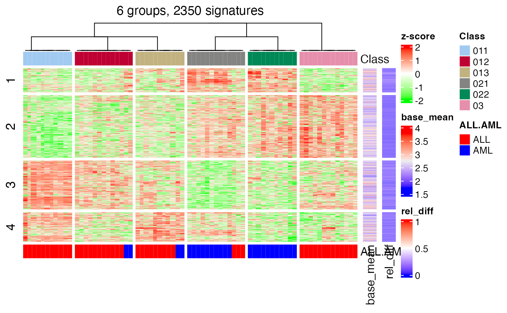

get_signatures-HierarchicalPartition-method.RdGet signatures rows
# S4 method for HierarchicalPartition
get_signatures(object, merge_node = merge_node_param(),
group_diff = object@param$group_diff,
row_km = NULL, diff_method = "Ftest", fdr_cutoff = object@param$fdr_cutoff,
scale_rows = object[1]@scale_rows,
anno = get_anno(object),
anno_col = get_anno_col(object),
show_column_names = FALSE, column_names_gp = gpar(fontsize = 8),
verbose = TRUE, plot = TRUE, seed = 888,
...)a HierarchicalPartition-class object.
Parameters to merge sub-dendrograms, see merge_node_param.
Cutoff for the maximal difference between group means.
Number of groups for performing k-means clustering on rows. By default it is automatically selected.
Methods to get rows which are significantly different between subgroups.
Cutoff for FDR of the difference test between subgroups.
whether apply row scaling when making the heatmap.
a data frame of annotations for the original matrix columns. By default it uses the annotations specified in hierarchical_partition.
a list of colors (color is defined as a named vector) for the annotations. If anno is a data frame, anno_col should be a named list where names correspond to the column names in anno.
whether show column names in the heatmap.
Graphic parameters for column names.
whether to print messages.
whether to make the plot.
Random seed.
other arguments pass to get_signatures,ConsensusPartition-method.
The function calls get_signatures,ConsensusPartition-method to find signatures at
each node of the partition hierarchy.
A data frame with more than two columns:
which_row:row index corresponding to the original matrix.
km:the k-means groups if row_km is set.
the mean value (depending rows are scaled or not) in each subgroup.
# \donttest{
data(golub_cola_rh)
tb = get_signatures(golub_cola_rh)
#> * get signatures at node 0 with 3 subgroups.
#> * 71/72 samples (in 3 classes) remain after filtering by silhouette (>= 0.5).
#> * cache hash: 69feee4d94f63bf432b51d8e53ece52c (seed 888).
#> * calculating row difference between subgroups by Ftest.
#> * get signatures at node 01 with 3 subgroups.
#> * 34/35 samples (in 3 classes) remain after filtering by silhouette (>= 0.5).
#> * cache hash: 2998831f64132aeaf6eb44c6e6912575 (seed 888).
#> * calculating row difference between subgroups by Ftest.
#> * get signatures at node 02 with 2 subgroups.
#> * 24/24 samples (in 2 classes) remain after filtering by silhouette (>= 0.5).
#> * cache hash: ea242e8e77a1cc217cae91637d6d95f6 (seed 888).
#> * calculating row difference between subgroups by Ftest.
#> * split rows into 4 groups by k-means clustering.
#> * found 2350 signatures (57.1%).
#> * randomly sample 2000 rows from 2350 total rows.
#> * making heatmaps for signatures

head(tb)
#> which_row is_sig_0 is_sig_01 is_sig_02 mean_011 mean_012 mean_013 mean_021
#> 1 2 TRUE FALSE FALSE 1.641389 1.845958 1.762456 2.091835
#> 2 3 TRUE FALSE FALSE 2.184402 2.206852 2.183741 2.171343
#> 3 11 TRUE FALSE FALSE 2.288716 2.333027 2.427159 2.600189
#> 4 12 TRUE FALSE FALSE 2.269837 2.357288 2.565022 2.690489
#> 5 13 TRUE FALSE FALSE 2.424987 3.011391 2.795872 3.151072
#> 6 14 TRUE FALSE FALSE 3.035862 3.445460 3.269206 3.489674
#> mean_022 mean_03 group_diff scaled_mean_011 scaled_mean_012 scaled_mean_013
#> 1 2.068923 2.003520 0.4504458 -0.8295840 -0.1950825 -0.4540758
#> 2 2.346207 2.386800 0.2154572 -0.2994006 -0.1924667 -0.3025460
#> 3 2.445832 2.366862 0.3114738 -0.6207227 -0.3980173 0.0750845
#> 4 2.382775 2.265742 0.4247472 -0.6046877 -0.2598623 0.5592590
#> 5 2.473630 3.416868 0.9918814 -0.6637468 0.1468631 -0.1510570
#> 6 3.232134 3.622108 0.5862460 -0.8241242 0.2069714 -0.2367195
#> scaled_mean_021 scaled_mean_022 scaled_mean_03 group_diff_scaled km
#> 1 0.5675420 0.4964768 0.2936185 1.397126 2
#> 2 -0.3616000 0.4712822 0.6646289 1.026229 2
#> 3 0.9447291 0.1689359 -0.2279637 1.565452 1
#> 4 1.0539864 -0.1593632 -0.6208386 1.674825 1
#> 5 0.3399502 -0.5965052 0.7073713 1.371118 2
#> 6 0.3182753 -0.3300409 0.6516556 1.475780 2
# }